Note
Go to the end to download the full example code.
Lecture 4: Dynamic Programming
# # Lecture 4: Dynamic Programming
import numpy as np
from scipy.special import softmax
import rldurham as rld
env = rld.make(
'FrozenLake-v1', # import the frozen lake environment
# 'FrozenLake8x8-v1', # use a bigger version
render_mode="rgb_array", # for rendering as image/video
is_slippery=False, # warning: slippery=True results in very complex environment dynamics where the optimal solution is not very intuitive to humans!
# desc=["GFFS", "FHFH", "FFFH", "HFFG"], # define custom map
)
rld.seed_everything(42, env)
# some info
rld.env_info(env, print_out=True)
print('action space: ' + str(env.action_space))
print('observation space: ' + str(env.observation_space))
rld.render(env)
actions are discrete with 4 dimensions/#actions
observations are discrete with 16 dimensions/#observations
maximum timesteps is: 100
action space: Discrete(4)
observation space: Discrete(16)
# actions
LEFT, DOWN, RIGHT, UP = 0,1,2,3
# lets do an example step for the policy
env.reset()
next_state, reward, term, trunc, info = env.step(RIGHT)
print('=============')
print('next state: ' + str(next_state))
print('terminated: ' + str(term))
print('truncated: ' + str(trunc))
print(' reward: ' + str(reward))
print(' info: ' + str(info))
rld.render(env, clear=False)
=============
next state: 1
terminated: False
truncated: False
reward: 0.0
info: {'prob': 1.0}
Policy evaluation
def policy_evaluation(env, policy, gamma=1, theta=1e-8, draw=False):
V = np.zeros(env.observation_space.n)
while True:
delta = 0
for s in range(env.observation_space.n):
Vs = 0
for a, action_prob in enumerate(policy[s]):
for prob, next_state, reward, done in env.P[s][a]:
Vs += action_prob * prob * (reward + gamma * V[next_state])
delta = max(delta, np.abs(V[s]-Vs))
V[s] = Vs
if draw:
rld.plot_frozenlake(env=env, v=V, policy=policy, draw_vals=True)
if delta < theta:
break
return V
# lets start with a random policy, in this case there's a 1/4 probability of taking any action at every 4x4 state
policy = np.ones([env.observation_space.n, env.action_space.n]) / env.action_space.n
# evaluate this policy (change draw=True to show steps, and ensure environment is 'FrozenLake-v1' for the exact same steps in the lecture)
V = policy_evaluation(env, policy, draw=True)
# Get $q_\pi$ form $v_\pi$ by a one-step look ahead
- 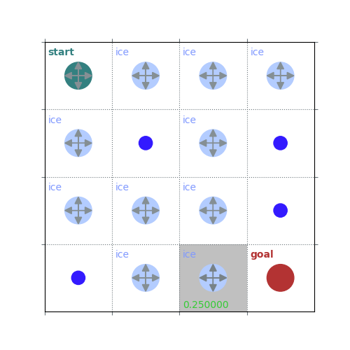
- 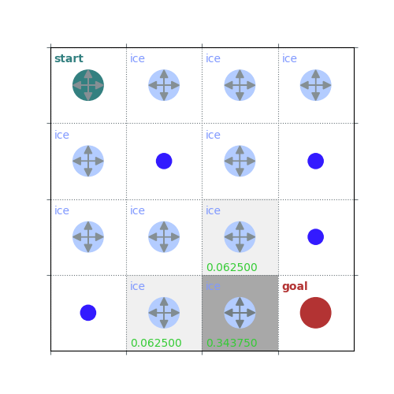
- 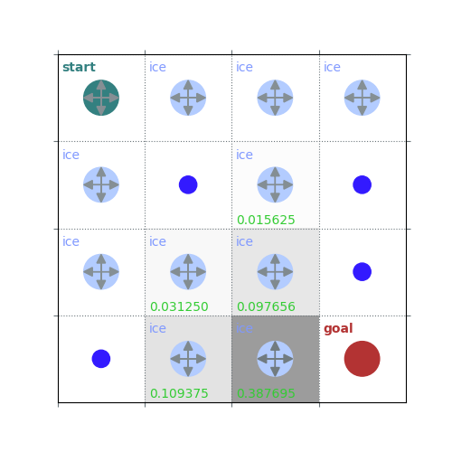
- 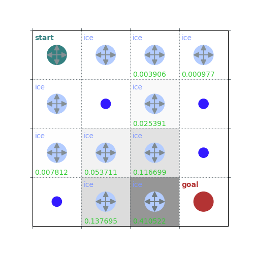
- 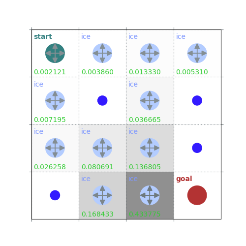


- 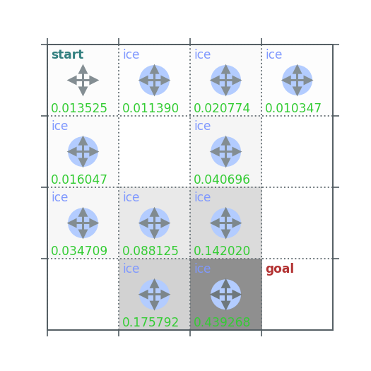
- 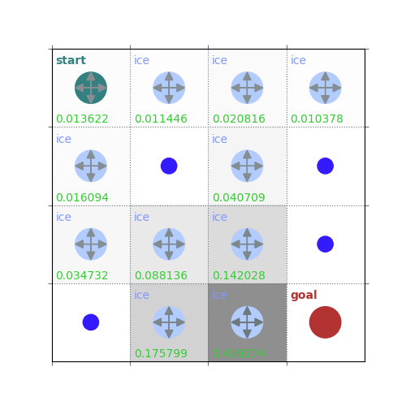


/home/runner/work/rldurham/rldurham/rldurham/__init__.py:81: RuntimeWarning: More than 20 figures have been opened. Figures created through the pyplot interface (`matplotlib.pyplot.figure`) are retained until explicitly closed and may consume too much memory. (To control this warning, see the rcParam `figure.max_open_warning`). Consider using `matplotlib.pyplot.close()`.
plt.figure(figsize=(3, 3))
def q_from_v(env, V, s, gamma=1):
q = np.zeros(env.action_space.n)
for a in range(env.action_space.n):
for prob, next_state, reward, done in env.P[s][a]:
q[a] += prob * (reward + gamma * V[next_state])
return q
def policy_improvement(env, V, gamma=1):
policy = np.zeros([env.observation_space.n, env.action_space.n]) / env.action_space.n
for s in range(env.observation_space.n):
q = q_from_v(env, V, s, gamma)
# # deterministic policy (will always choose one specific an action and does not capture the distribution)
# policy[s][np.argmax(q)] = 1
# stochastic optimal policy (puts equal probability on all maximizing actions)
best_a = np.argwhere(q==np.max(q)).flatten()
policy[s] = np.sum([np.eye(env.action_space.n)[i] for i in best_a], axis=0) / len(best_a)
# # softmax policy that adds some exploration
# policy[s] = softmax(q / 0.01)
return policy
# plot the policy from a single greedy improvement step after policy evaluation
policy = policy_improvement(env, V)
rld.plot_frozenlake(env, V, policy, draw_vals=True)
rld.plot_frozenlake(env, V, policy, draw_vals=False)
- 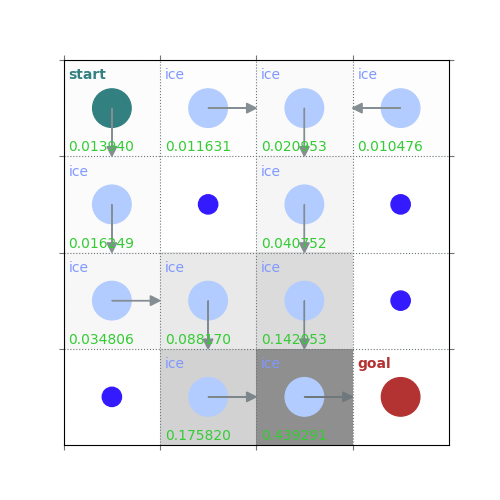
- 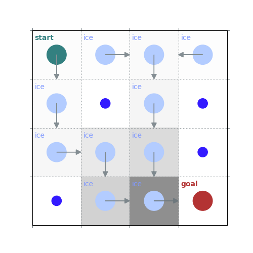
# lets from here on use a larger grid world
env = rld.make('FrozenLake8x8-v1', is_slippery=False)
rld.seed_everything(42, env)
policy = np.ones([env.observation_space.n, env.action_space.n]) / env.action_space.n
V = policy_evaluation(env, policy, draw=False)
# show improved policy from the policy evaluation, for the 8x8 case it's still not great
new_policy = policy_improvement(env, V)
rld.plot_frozenlake(env, V, new_policy)
# now solve the MDP by policy iteration
def policy_iteration(env, gamma=1, theta=1e-8):
policy = np.ones([env.observation_space.n, env.action_space.n]) / env.action_space.n
while True:
# evaluate the policy (get the value function)
V = policy_evaluation(env, policy, gamma, theta)
# greedily choose the best action
new_policy = policy_improvement(env, V)
if np.max(abs(policy_evaluation(env, policy) - policy_evaluation(env, new_policy))) < theta*1e2:
break;
policy = new_policy.copy()
return policy, V
# do policy iteration
policy_pi, V_pi = policy_iteration(env, gamma=0.7)
rld.plot_frozenlake(env, V_pi, policy_pi, draw_vals=True)
rld.plot_frozenlake(env, V_pi, policy_pi, draw_vals=False)
- 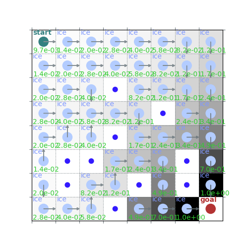
- 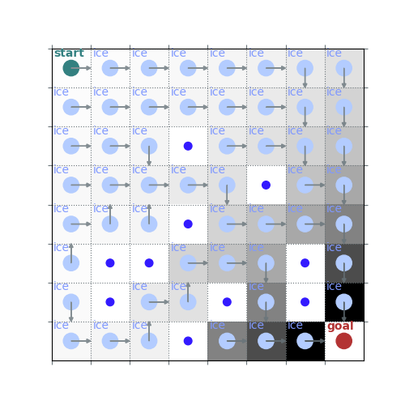
# now lets do value iteration, which is the k=1 case but simplifies saving computation
# note how there are no intermediate policies until the end
def value_iteration(env, gamma=1, theta=1e-8):
V = np.zeros(env.observation_space.n) # initial state value function
while True:
delta = 0
for s in range(env.observation_space.n):
v_s = V[s] # store old value
q_s = q_from_v(env, V, s, gamma) # the action value function is calculated for all actions
V[s] = max(q_s) # the next value of the state function is the maximum of all action values
delta = max(delta, abs(V[s] - v_s))
if delta < theta: break
# lastly, at convergence, we can get a (optimal) policy from the optimal state value function
policy = policy_improvement(env, V, gamma)
return policy, V
policy_pi, V_pi = value_iteration(env, gamma=0.7)
rld.plot_frozenlake(env, V_pi, policy_pi, draw_vals=True)
rld.plot_frozenlake(env, V_pi, policy_pi, draw_vals=False)
- 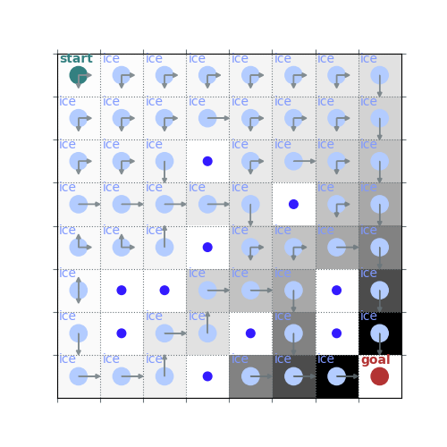
# here's an expanded version of the above that's more similar to lecture slides
def value_iteration(env, gamma=1, theta=1e-8):
V = np.zeros(env.observation_space.n)
while True:
delta = 0
for s in range(env.observation_space.n):
v_s = V[s]
# one step look ahead to get q from v
q_s = np.zeros(env.action_space.n)
for a in range(env.action_space.n):
for prob, next_state, reward, done in env.P[s][a]:
q_s[a] += prob * (reward + gamma * V[next_state])
V[s] = max(q_s)
delta = max(delta, abs(V[s] - v_s))
if delta < theta: break
policy = policy_improvement(env, V, gamma)
return policy, V
policy_pi, V_pi = value_iteration(env, gamma=0.7)
rld.plot_frozenlake(env, V_pi, policy_pi, draw_vals=True)
rld.plot_frozenlake(env, V_pi, policy_pi, draw_vals=False)
- 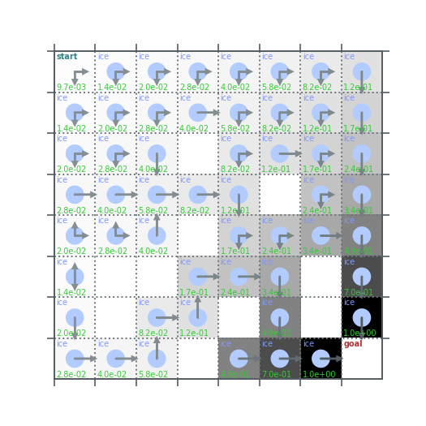
Total running time of the script: (0 minutes 8.879 seconds)